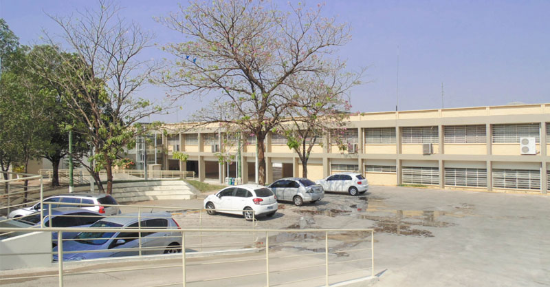
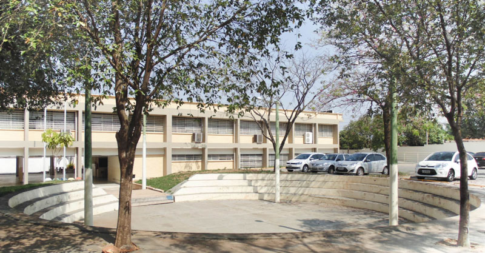

Fatec
A Fatec Jales, iniciou suas atividades em 10 de setembro de 2007, instalada em espaço concedido à Secretaria da Ciência, Tecnologia e Desenvolvimento Econômico pela Secretaria da Educação. O curso superior inicial oferecido foi de Tecnologia em Agronegócio, com 80 vagas semestrais, sendo 40 no período matutino e 40 no período noturno, com a duração de seis semestres.
No primeiro semestre de 2010, foi implantado o curso de Tecnologia em Sistemas para Internet, com 70 vagas semestrais, sendo 35 no período vespertino e 35 no período noturno, também com duração de seis semestres. A partir do primeiro semestre de 2013, o curso de Sistemas para Internet passou a ser oferecido nos períodos matutino e noturno.
No segundo semestre de 2014, foi implantado o curso de Tecnologia em Gestão Empresarial, com 40 vagas semestrais no período noturno. A partir do primeiro semestre de 2015, esse passou a ser oferecido também na modalidade a distância, com 40 vagas semestrais. Formar profissionais competentes, capazes de atuar em um mercado de trabalho em constante evolução, de maneira eficaz, com propostas inovadoras e princípios éticos.
Com o objetivo de melhor atender à comunidade acadêmica e oferecer um ensino superior público de excelência, o Governo do Estado de São Paulo investiu mais de R$ 4 milhões em obras de adequação e melhorias em toda estrutura física, sendo realizada entre 2012 e 2014; dessa maneira, a comunidade escolar pode usufruir das novas instalações que favorecem o processo de ensino e aprendizagem dos cursos já oferecidos e de outros futuros. Nessa obra, todo prédio foi adaptado para oferecer acessibilidade aos usuários.
- 
-

- 
-